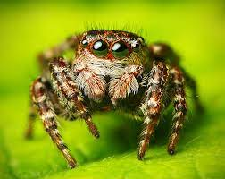
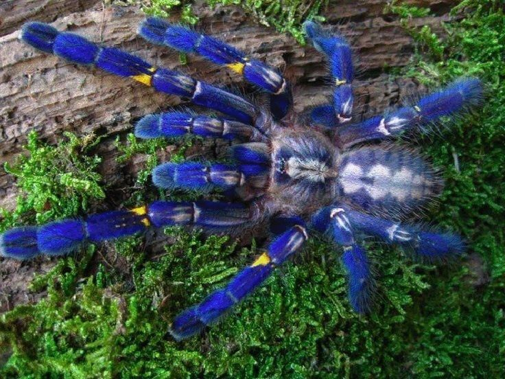

Las Arañas
La anatomía de las arañas coincide a grandes rasgos con la de otros arácnidos

Los saltícidos (Salticidae) son una familia de pequeñas arañas araneomorfas conocidas comúnmente como arañas saltarinas, saltadoras o caza moscas. Con más de 700 géneros descritos y más de 7000 especies descritas.
Las tarántulas Haplopelma lividum, más conocidas como cobalt blue por su color azul cobalto, son una especie de tarántula nativa de Birmania y Tailandia.Esta araña, muy popular entre los aficionados, es de tamaño mediano con una medida entre patas de aproximadamente 13 cm, es conocida por sus patas de color azules iridiscentes.

Videos
Vidos de arañas que me parecieron facheros
Videos sobre los rituales de reproduccion de las arañas (mas que nada demostrando el peligro de estos) y sobre como las arañas construyen su tela de araña